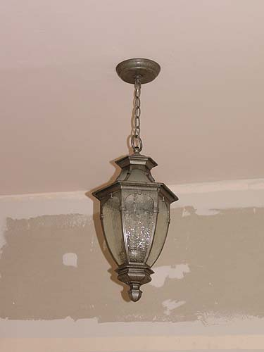

2nd floor cabinets and
lights
I've started building cabinets for the
back wall of
the 2nd floor. I'm building the boxes
and hope to
get the doors from Home Depot. I first
did some practice
shelves in the living room.
We've also got lights and a fan on the
second floor now.
Lower cabinets on the back wall and
above will be built in shelves to the ceiling. I should be able to fit
all my books on the 10' X 10' wall.
We'll probably cover the electric panel
with a tapestry of some sort. Nothing too solid.
Not in the tower, but a few pictures
of the test shelves that I built in the living room. The lower cabinets
I made a few years ago, but the shelves I just installed.
I didn't have any ideas for molding
on the shelf above the door, so I by-passed that part..
There will be cabinet doors for the
middle three sections, and they will be flanked by sets of drawers in the
narrow cabinets.

The ceiling light fixture is a bit
gothic, and matches the lights in the stair wells.
Going for more of an inventor's look
with the fan. I'd been looking and looking. When I saw this one, I knew
I'd buy it.
Father did a great job fitting the
steps. Now we need to figure out nosings, etc. Still, much nicer than the
osb that's underneath.